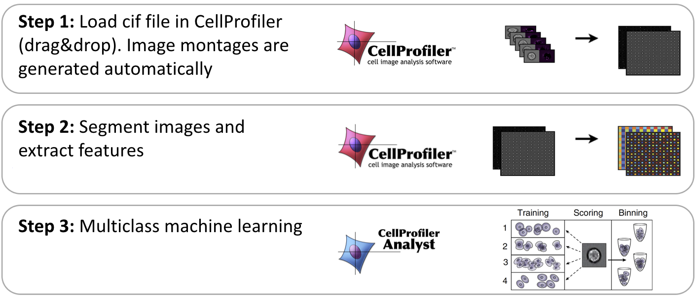
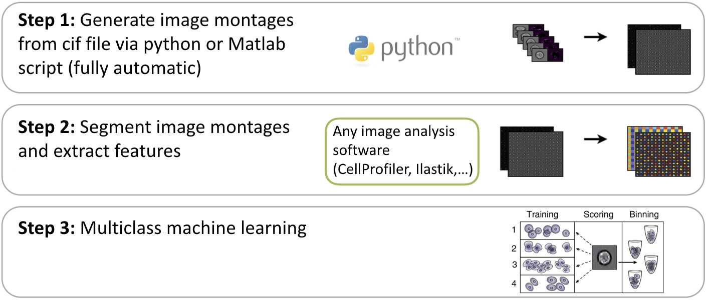

Imaging flow cytometry analysis using CellProfiler
Imaging flow cytometry combines the high-throughput capabilities of conventional flow cytometry with single-cell imaging. CellProfiler can be used to analyze the resulting images from imaging flow cytometry, whether brightfield, darkfield, or fluorescence.In some cases, even unlabeled cells can be scored for particular phenotypes. In the workflow outlined below, we have demonstrated label-free prediction of DNA contentand quantification of the mitotic cell cycle phases by applying supervised machine learning to morphological features extracted from brightfield and the typically-ignored darkfield images of cells from an imaging cytometer. This method facilitates non-destructive monitoring of cells avoiding potentially confounding effects of fluorescent stains while maximizing available fluorescence channels.
Paper: Blasi T, Hennig H, Summers HD, Theis FJ, Cerveira J, Patterson JO, Davies D, Filby A, Carpenter AE, Rees P (2016). Label-free cell cycle analysis for high-throughput imaging flow cytometry. Nat Commun 7:10256 / doi PMID: 26739115. PMCID: In Press. (Research article)
Protocol: [Download all protocols]

 Step 1:
Extract single cell images & identify cell
populations with IDEAS
software
Step 1:
Extract single cell images & identify cell
populations with IDEAS
software


 Step 2: Preprocess the
single cell images combine them to montages of
images using Matlab
Step 2: Preprocess the
single cell images combine them to montages of
images using Matlab


 Step 3: Segment images
and extract features using
CellProfiler
Step 3: Segment images
and extract features using
CellProfiler
 Step 4 (optional):
Machine Learning for label-free prediction of
cell phenotypes
Step 4 (optional):
Machine Learning for label-free prediction of
cell phenotypes
Classification: [PDF protocol] [example input file] [source code] [example output data file]
Regression: [PDF protocol] [example input data file] [source code] [example output data file]
Future developments
A new protocol for analyzing imaging flow cytometry data in high-throughput is currently under development:

In addition, analyzing imaging flow cytometry data in high-throughput will also become more streamlined using any image analysis software via the following protocol (under development):
